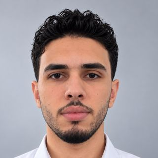

01
Production operations
Supporting daily production follow-up, operational reporting and coordination between teams.
PROCESS & COORDINATIONBILAL EZZINE / PORTFOLIO 2026
Production Management Assistant Intern with hands-on experience in industrial logistics, material traceability and digital tools. I combine field knowledge with a background in software development.

BE.My work brings together industrial operations, structured data and an improvement mindset.
Supporting daily production follow-up, operational reporting and coordination between teams.
PROCESS & COORDINATIONComponent receiving, inbound operations, material movements and inventory accuracy.
FLOW & TRACEABILITYApplying Excel and software-development skills to make information easier to organize and use.
TOOLS & INFORMATIONIndustrial environment · Operations & logistics
Support for material-flow monitoring, production follow-up and operational coordination.
Incoming component checks, stock data entry, material traceability and discrepancy reporting.
Explore professional experienceDigital recruitment platform
A multi-role web application for job offers, candidate profiles, applications and administration. Built as my final-year software development project.
An Excel-based tracking idea to structure consumables records, monitor quantities and flag replenishment needs. Proposal, not a deployed system.
Specialized university studies in Industrial Engineering, Logistics and New Technologies (GILN) at EST Kénitra.
I am open to professional conversations in operations, logistics and technology.